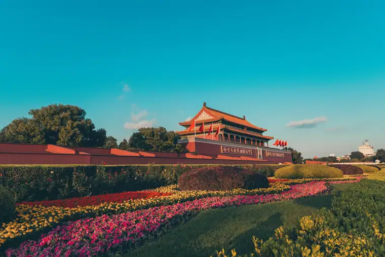
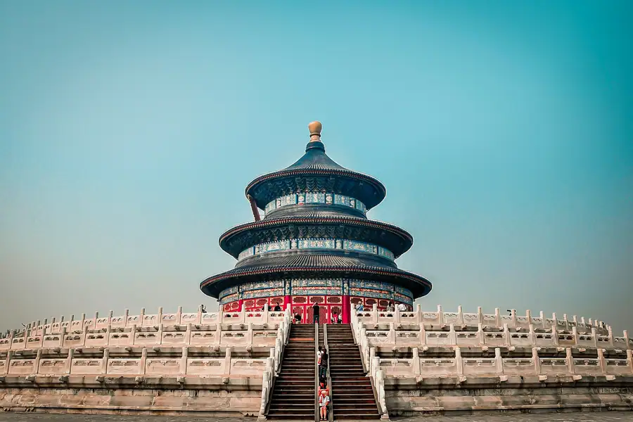
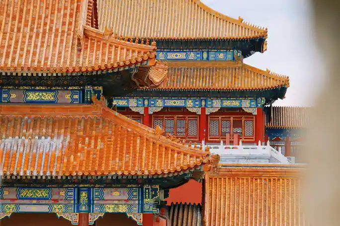

Beijing Airport Transfer & Private Car
Capital (PEK) & Daxing (PKX) to downtown with licensed professional driver. Fixed price, free flight tracking. Explore 3,000 years of history in comfort.
Beijing in Pictures
Real scenes from Beijing — landmarks, streets and everyday life.



Top Beijing Attractions
From historic sites to local flavours, here is what Beijing is known for.
Popular Beijing Routes
Fixed-price private car service for Beijing's most popular journeys.
Capital Airport (PEK) → City Center
From ¥328 (≈ $46.2)~30 km · 45–60 min · Economy/Business/MPV
Beijing Capital Airport (PEK) is China's busiest airport. Your driver meets you at the arrival hall with a name board, tracks your flight for delays, and takes you directly to hotels in Dongcheng, Chaoyang, or Xicheng districts. No waiting for taxis or navigating the airport express.
Daxing Airport (PKX) → City Center
From ¥328 (≈ $46.2)~50 km · 60–90 min · Economy/Business/MPV
Beijing Daxing International Airport (PKX) opened in 2019 and is one of the world's largest airports. Located 46 km south of the city, it's far from public transit connections. Our private car service is the most comfortable option, especially after a long international flight.
Beijing → Great Wall (Mutianyu)
From ¥845 (≈ $119.01)~70 km · 90 min · 8-hour day trip
The most popular day trip from Beijing. Your driver picks you up at your hotel, drives you to the Mutianyu section (less crowded than Badaling), waits while you explore, and returns you to your hotel. Optional cable car tickets can be arranged.
Beijing City Tour (Full Day)
From ¥845 (≈ $119.01)8 hours · Business vehicle · Custom itinerary
Visit the Forbidden City, Tiananmen Square, the Temple of Heaven, and the Great Wall in one day with a private car. Your driver knows the best routes, parking locations, and timing to avoid crowds. Add a fluent English guide for deeper historical insights.
Transparent Pricing in Beijing
Published rates, no estimate games. Check the numbers yourself before you book — and the price you see is the price your driver is paid from.
Fixed Price List — 北京市 (Beijing)
Published rates from our 2026 quote sheet. Renminbi first, USD for reference at 1 USD = ¥7.10. Every price below already includes tolls, parking, driver service and free airport waiting time (up to 60 minutes after your flight lands) — nothing is added on the day.
🛬 Airport & Intercity Transfer
One flat fare for airport pickup, drop-off or city-to-city — intercity costs the same as the airport run. 35 km and 60 minutes included; beyond that we charge by the minute and the kilometre at the rates shown.
| Vehicle | Seats | Bags | Fixed fare | USD | Beyond 35 km / 60 min |
|---|---|---|---|---|---|
| 4座 经济型专车 | 4 | 2 | ¥328 | ≈ $46.2 | ¥1.55/min · ¥7.29/km |
| 4座 舒适型专车 | 4 | 2 | ¥468 | ≈ $65.92 | ¥1.71/min · ¥8.07/km |
| 6座 商务车 | 6 | 3 | ¥585 | ≈ $82.39 | ¥1.82/min · ¥8.58/km |
| 8-11座 商务车 | 11 | 4 | ¥889 | ≈ $125.21 | ¥2.37/min · ¥11.15/km |
| 12-18座 商务车 | 18 | 4 | ¥1014 | ≈ $142.82 | ¥2.64/min · ¥12.44/km |
| 19-55座 大巴 | 55 | 5 | ¥1248 | ≈ $175.77 | ¥3/min · ¥14.16/km |
🚗 Hourly Private Charter
Book the car and the hours, keep the car for the day. Unused kilometres can be carried into the next tier, so a long day never turns into a penalty. The driver stays with you — you set the stops.
| Vehicle | 2h / 35km | 4h / 50km | 6h / 75km | 8h / 100km | 10h / 125km |
|---|---|---|---|---|---|
| 4座 专车 | ¥390 | ¥637 | ¥741 | ¥845 | ¥1040 |
| 6座 商务车 | ¥507 | ¥832 | ¥962 | ¥1105 | ¥1352 |
| 8-11座 商务车 | ¥730 | ¥1198 | ¥1385 | ¥1591 | ¥1947 |
| 12-18座 商务车 | ¥876 | ¥1438 | ¥1662 | ¥1909 | ¥2336 |
| 19-55座 大巴 | ¥1051 | ¥1725 | ¥1995 | ¥2291 | ¥2804 |
Why travellers book Beijing with Chinawheely
Six things you get with every booking — in Beijing and across all 333 cities on the platform.
Licensed travel agency, not a ride-hail app
Chinawheely is a registered travel agency (L-HUB-101603). Your booking is a travel contract with a licensed operator — not a broker handing your number to whoever answers the phone.
One locked price, shown before you pay
The price you see is the price you pay. Tolls, parking, driver service and airport waiting time are already inside it. No surge pricing, no meter, no cash-on-the-day surprise.
Flight tracked, waiting time on us
We watch your flight number in real time. If it lands late or is delayed, your driver shifts with it and the waiting time stays on us — not on your bill.
A licensed driver who knows the city
Every car is driven by a professional local driver who knows the routes, the shortcuts and the parking that actually works near the attractions — with English communication and a name board on arrival.
Free changes up to 48 hours before
Plans move. Reschedule or cancel any booking free of charge up to 48 hours before your scheduled pickup, straight from your confirmation link.
A real human on WhatsApp, 8AM–12AM Beijing time
One message reaches a person who can re-price, re-route or re-plan your trip on the spot. No ticket queue, no chatbot loop.
Book Beijing at the published price
Pick your vehicle, see the fare line by line, and pay by PayPal or Alipay. Free changes up to 48 hours before pickup — or ask on WhatsApp and we will hold a car for you.
The quote is valid for 48 hours, and you can change or cancel free up to 48 hours before pickup.
Getting to Beijing: Airports & Railway Stations
Everything you need to know about arriving in Beijing and reaching your hotel.
✈️ Airports
Beijing Capital International Airport (PEK)
Northeast of the city · 27 km to the Forbidden City
Beijing Capital Airport (PEK) is China's busiest international gateway. It has two operational passenger terminals: Terminal 2 (many domestic and some international flights) and Terminal 3 (Air China, Star Alliance, and most long-haul international flights). Terminal 1 is currently closed. To reach the city center, the Airport Express train takes about 20 minutes to Dongzhimen, but with luggage after a long flight, a private car is the most comfortable option. By road, expect 45–60 minutes to Dongcheng or Chaoyang districts, depending on traffic.
Beijing Daxing International Airport (PKX)
South of the city · 46 km to the Forbidden City
Opened in September 2019, PKX is one of the world's largest single-terminal airports and serves as the hub for China Southern, China Eastern, and their partners. The iconic starfish-shaped terminal is stunning, but it is far from downtown. The Daxing Airport Express reaches Caoqiao in about 20 minutes, yet transferring to a taxi with luggage can be tiring. Our private car service is the fastest door-to-door solution, typically taking 60–90 minutes to central Beijing hotels.
🚄 Railway Stations
Beijing South Station
High-speed hub · 30 min to the Forbidden City
The main station for high-speed trains to Shanghai, Tianjin, Jinan, Nanjing, and Hangzhou. The station itself is modern and efficient. A private car pickup is recommended, as taxi queues can be long during peak hours.
Beijing West Station
Long-distance & HSR · 25 min to the Forbidden City
The gateway to western and southern China by train, with high-speed services to Xi'an, Guangzhou, Wuhan, Chengdu, Zhengzhou, and Kunming. It is one of China's largest railway stations, so pre-booking a pickup with a clear meeting point saves time.
Beijing Station
Historic central station · 10 min to Tiananmen Square
Located near Jianguomen and the CBD, this is the city's oldest main station. It mainly serves conventional trains to Northeast China, coastal cities, and some international routes to Mongolia and Russia. Its central location makes hotel transfers quick.
Beijing North Station
Suburban trains · Near Xizhimen
Used mainly for suburban trains, including the S2 line to Badaling Great Wall and the high-speed rail to Zhangjiakou. The station building is a historic European-style structure originally opened in 1909.
Beijing Chaoyang Station
Newest station · Northeast Beijing
Opened in 2021, this station mainly serves high-speed trains to Northeast China, including Harbin, Shenyang, and Changchun. It is located in the Chaoyang district, convenient for hotels in the east of the city.
Need a Station Pickup?
We meet you at the exit with a name board and help with luggage.
Book Station TransferFood & Shopping in Beijing
🍽️ Must-Try Beijing Cuisine
Beijing Roast Duck (Quanjude)
The city's most famous dish. Crispy skin, tender meat, wrapped in thin pancakes with sweet bean sauce. Quanjude and Da Dong are the most renowned restaurants. Your driver can recommend the best duck restaurant based on your location and budget.
Zhajiangmian (Noodles with Soybean Paste)
A beloved Beijing street food. Thick wheat noodles topped with a savory fermented soybean paste, cucumber, and bean sprouts. Try it at a local hutong eatery for an authentic experience.
Jianbing (Beijing Crepes)
The quintessential Beijing breakfast — a crispy egg crepe with scallions, cilantro, and a crunchy fried cracker. Sold at street carts across the city. Ask your driver for the best morning spot near your hotel.
Hotpot (Shuan Yang Rou)
Mongolian-style hotpot with thinly sliced lamb, fresh vegetables, and sesame dipping sauce. Beijing's winters are perfect for this communal dining experience. Ask your driver for a local favorite away from tourist traps.
🛍️ Shopping Destinations
Wangfujing Street
Beijing's most famous shopping street, featuring international brands, traditional Chinese crafts, and the famous Wangfujing Snack Street. Your driver can drop you at the pedestrian entrance and arrange a pickup time.
Sanlitun (Taikoo Li)
The trendy heart of Beijing's nightlife and fashion. Open-air malls with international designer brands, craft breweries, and rooftop bars. Perfect for an evening shopping trip with a private car waiting to take you home safely.
Pearl Market (Hongqiao Market)
A multi-story market famous for pearls, silk, electronics, and souvenirs. Bargaining is expected. Your driver can help you negotiate or recommend trustworthy vendors and ensure you don't get overcharged.
Panjiayuan Antique Market
The largest antique market in China, open on weekends. Hundreds of stalls selling ceramics, jade, calligraphy, and Mao memorabilia. A fascinating cultural experience, best visited early morning with a private car for the 30-minute drive from downtown.
🎁 What to Buy in Beijing
Cloisonné (Jingtailan)
Beijing's most iconic craft. Look for vases, bracelets, and small boxes with intricate copper-wire patterns and brilliant enamel colors. The best pieces are sold at the Cloisonné Factory or reputable shops in Wangfujing.
Beijing Opera Masks
Hand-painted masks representing different characters in traditional opera. Each color has a meaning: red for loyalty, black for integrity, white for treachery. Great as wall art or gifts.
Chinese Tea & Teaware
Beijing tea houses stock jasmine tea, pu'er, and oolong from across China. Pair your tea with a Yixing clay teapot or porcelain gaiwan for an authentic gift set.
Silk, Paper-Cuts & Calligraphy
Soft silk scarves, red paper-cuttings, and hand-brushed calligraphy scrolls are lightweight, meaningful souvenirs. Silk Street and Liulichang are reliable shopping areas.
Intangible Cultural Heritage & Living Crafts of Beijing
Meet the traditional arts that have defined Beijing for centuries — and the artisans keeping them alive.
🎭 Beijing Opera (Jingju)
UNESCO-listed intangible heritage. With roots in the 18th century, Beijing Opera combines singing, mime, dance, acrobatics, and stylized combat. The elaborate face painting and costumes make every performance a visual feast.
Where to experience it: Liyuan Theatre, Zhengyici Theatre, or Huguang Guild Hall. Ask your driver to book tickets in advance.
🏺 Cloisonné Enamel (Jingtailan)
A Beijing specialty since the Yuan dynasty, cloisonné involves soldering copper wires onto a metal body, filling the compartments with enamel, and firing multiple times. The result is luminous, jewel-like tableware and art pieces.
Living master: Master Zhang Tonglu, a national-level inheritor, has devoted over 60 years to cloisonné design. His studio creates museum-quality pieces that preserve the imperial tradition while introducing contemporary forms.
✂️ Beijing Paper-Cutting (Jianzhi)
Red paper-cuttings of flowers, animals, and auspicious symbols are pasted on windows during Spring Festival. Beijing's style is bold and symmetrical, often featuring the city's landmark architecture alongside traditional motifs.
Where to find it: workshops in hutongs, Panjiayuan Market, and the Beijing Folk Art Museum.
🪁 Kite Making (Shayan Kite)
Traditional Beijing kites are framed with bamboo and painted with birds, butterflies, or characters from folklore. The Shayan kite tradition, passed down through generations of craftsmen, is known for its perfect balance and elegant designs.
Where to find it: Look for kite craftsmen at the Temple Fair during Spring Festival, or visit traditional craft shops near Shichahai.
🎨 Inside-Bottle Painting
An astonishing art form where artists paint miniature landscapes, figures, and animals on the inside surface of tiny glass bottles using a bent brush. It requires years of steady hands and deep concentration.
Where to find it: Liulichang Cultural Street and the Beijing Enamel Factory have shops and demonstrations.
🎤 Storytelling & Acrobatics (Pingshu & Acrobatics)
Traditional Beijing storytelling (pingshu) and acrobatics have entertained locals in teahouses for centuries. Acrobatics troupes perform breathtaking feats of balance, juggling, and contortion nightly.
Where to see it: Chaoyang Theatre Acrobatics Show, Laoshe Teahouse, or Tianqiao Acrobatics Theatre.
Beijing Local Secrets
Insider tips to help you experience Beijing like a local.
Beat the Crowds at the Forbidden City
Enter through the Gate of Divine Prowess (Shenwu Men) at opening time and walk the opposite direction of the tour groups. The central axis is busiest, but the side halls are quieter and equally beautiful.
Eat Breakfast Like a Beijinger
Start with a jianbing from a street cart, then try douzhi (fermented mung bean milk) and jiaoquan (crispy fried dough rings) at a traditional hutong shop. The flavor is polarizing — but it's the real Beijing.
Explore the Hutongs by Bike or on Foot
Skip the crowded Nanluoguxiang and explore Beixinqiao, Guozijian, or Wudaoying Hutong instead. These alleys still have family courtyards, independent cafés, and old Beijing charm.
Seasonal Highlights
Spring: Cherry blossoms at Yuyuantan Park. Summer: Lotus flowers at Beihai Park. Autumn: Golden ginkgo avenues at Ditan Park. Winter: Skating on the frozen lakes of Shichahai.
Book the Forbidden City a Week Ahead
Tickets sell out, especially in peak season. Book online exactly 7 days before at 8 PM Beijing time. A Monday afternoon or a rainy day is usually less crowded.
Use a Private Car for the Great Wall
Public buses to Mutianyu or Badaling are crowded and slow. A private car lets you leave at 6 AM, arrive before the crowds, and visit a less-touristy section like Jinshanling or Simatai.
Day Trips from Beijing
Real destinations around Beijing, reached comfortably with a private car and a licensed professional driver.
Best Time to Visit beijing
beijing runs from -2.7 °C in January to 27.2 °C in July, an annual average of 13.3 °C and about 528 mm of rain across the year. The chart and the four seasons below are built from the city’s own climate record.
July is the warmest month at 27.2 °C and January the coldest at -2.7 °C, a spread of 29.9 °C. Rain is heaviest in July, which averages 170 mm, and lightest in January at 2 mm. Summer is the wettest stretch of the year at about 356 mm in total, while Winter is the driest at 10 mm.
For most travellers the winter window is the one to plan around: it carries only about 10 mm of rain across the whole season, against roughly 356 mm in summer. The 29.9 °C gap between the extremes also means the shoulder months either side of summer sit in a comfortable band, with many days in the high teens or low twenties.
Private transfers are booked by pickup time rather than by season, so the weather only changes what you do with the hours you have. In January a driver waiting at the terminal matters, because the afternoon average sits around -2.7 °C; by July the same day averages 27.2 °C and the car is most of the day’s comfort.
Spring
March, April, May · avg 14.6 °C · 66 mm rain
March averages 7.5 °C and May 21.3 °C, so the season warms fast.
Summer
June, July, August · avg 26.2 °C · 356 mm rain
July peaks at 27.2 °C, the warmest point of the whole year.
Autumn
September, October, November · avg 13.4 °C · 96 mm rain
September averages 21.2 °C and November 5.2 °C.
Winter
December, January, February · avg -1.0 °C · 10 mm rain
January bottoms out at -2.7 °C, the coldest point of the whole year.
Useful Chinese Phrases for Beijing
A few words go a long way with your driver and locals.
👋 Nǐ hǎo
你好
Hello — The universal greeting. Your driver will appreciate the effort.
🙏 Xièxiè
谢谢
Thank you — Use it often. Chinese people value politeness highly.
🚗 Wǒ xiǎng qù...
我想去...
I want to go to... — Essential for telling your driver the destination.
💰 Duōshao qián?
多少钱？
How much is this? — Useful for shopping and street food.
🚽 Cèsuǒ zài nǎlǐ?
厕所在哪里？
Where is the bathroom? — Always good to know when exploring.
Popular Beijing Airport Transfer Routes
🚗 Beijing Airport Transfer to the Forbidden City
Book a private car from Beijing Capital (PEK) or Daxing (PKX) to the Forbidden City. Licensed driver, fixed price, free flight tracking and luggage-friendly sedans and MPVs.
View Route & Book →🚗 Beijing Airport Transfer to the Great Wall (Mutianyu or Badaling)
Book a private car from Beijing Capital (PEK) or Daxing (PKX) to the Great Wall at Mutianyu or Badaling. Licensed driver, fixed price, free flight tracking and comfortable vehicles.
View Route & Book →🚗 Beijing Airport Transfer to Tiananmen Square
Book a private car from Beijing Capital (PEK) or Daxing (PKX) to Tiananmen Square. Licensed driver, fixed price, free flight tracking and comfortable vehicles.
View Route & Book →Book Your Beijing Airport Transfer
Fixed price, licensed professional driver, free flight tracking. From Local or PKX to any Beijing hotel.
Get Instant QuoteQuestions? WhatsApp +86-155-2777-1775
Travel Essentials for Your Beijing Trip
Make your Beijing journey smoother with these essential services.
Mobile Pocket Wi-Fi
Stay connected anywhere in China with a pocket Wi-Fi device. Pre-book online and pick up at the airport or have it delivered to your hotel.
Book Wi-Fi at ChinaWiFiGoEnglish-Speaking Guide
Explore China's history and culture with a professional English-speaking guide. Custom tours, skip-the-line access, and insider knowledge.
Book Guide at VIPChinaGuideMedical Services
Add a health checkup, dental cleaning, or TCM treatment to your trip. China's world-class medical services cost 70% less than in the US or Europe.
Book Medical at MediEscortChina☕ Tea Culture & Tea House Guide in Beijing
Beijing has a long tea tradition. Jasmine Tea and Pu-erh are what you will find most often in the city's tea houses — some are local products, others are the everyday teas carried in from the producing areas. This guide covers where to drink them, what to order, and how the customs work.
☕ Pu-erh & Dark Tea
Lao She Teahouse (老舍茶馆)
Venue: Lao She Teahouse, 3 Dashilan East Street, Xicheng District Hours: Daily 10:00-21:30
Beijing most iconic traditional teahouse since 1989 near Dashilan. Serves authentic Beijing-style dim sum with jasmine tea (茉莉花茶) and pu-erh tea. Second floor hosts traditional Peking opera and folk art nightly. Visited by heads of state.
Dashilan Tea Street (大栅栏茶街)
Venue: Dashilan, Xicheng District Hours: Year-round, peak afternoon
The historic Dashilan area near Dashilan is home to Beijing oldest and most prestigious tea shops. Traditional establishments like Tongrentang (同仁堂) and Zhang Yuxuan (张一元) have sold premium teas for over a century. The street comes alive in afternoon when locals gather for tea and conversation.
☕ Jasmine Tea
Beijing Jasmine Tea Culture (北京茉莉花茶)
Venue: Various teahouses citywide near Dashilan and Wangfujing Hours: Year-round
Beijing has a unique tea culture centered on jasmine tea (茉莉花茶), often called the city tea of Beijing. Unlike fresh green teas of the south, Beijing jasmine tea is aged pu-erh base scented with fresh jasmine blossoms through multiple rounds of scenting, a tradition dating back to the Qing Dynasty.
☕ Oolong Tea
Temple Tea Culture - Yonghe Temple & Beihai Park Tea Houses
Venue: Beihai Park, Yonghe Temple area Hours: Daily 08:00-17:00
Beijing temples and imperial gardens feature traditional tea houses where visitors enjoy tea in contemplative settings. Yonghe Temple (Lama Temple) and Beihai Park have historic tea pavilions serving premium teas to visitors seeking peaceful tea experiences amid ancient surroundings.
☕ Premium Green Tea
Peking Tea House Culture - Erhuang Tea & Imperial Court Teas
Venue: Wangfujing and Dashilan tea streets Hours: Year-round
Traditional Beijing teahouses serve tea in covered bowls (盖碗茶) with tradition going back centuries. The city has a unique connection to Liu An Guo He (六安瓜片) and Huangshan Maofeng (黄山毛峰) teas from Anhui province, historically tribute teas for the imperial court.
Experience Beijing Tea Culture with a Private Car
Let our licensed professional driver take you to the best teahouses, tea markets, and tea villages in Beijing. No navigating unfamiliar streets — door to door, in comfort.
Book Tea TourExplore Beijing with Chinawheely — Your trusted partner for professional Beijing car service. Whether you need a Beijing airport transfer from Capital Airport (PEK) and Daxing Airport (PKX), a full-day Beijing city tour, or reliable hourly car hire with a licensed professional driver, Chinawheely delivers comfortable, fixed-price transportation across Beijing and beyond.
Airport Transfers & Ground Transportation in Beijing:
Beijing airport transfer · PEK airport pickup · Daxing airport drop-off · Beijing city center transfer
Top Destinations & Tours in Beijing:
Mutianyu Great Wall tour · Forbidden City visit
Premium & Business Car Service in Beijing:
Beijing business car service · Beijing executive car · Beijing luxury vehicle
Why Choose Chinawheely? Licensed travel agency (not a car rental) arranging verified professional drivers. Fixed pricing with no hidden fees. Free flight tracking for airport pickups. Support via WhatsApp and WeChat: Beijing time 8AM-12AM (16 hours). Book online or contact +86-155-2777-1775.
More Beijing Guides & Transfers
Airport transfers, day trips and practical guides for Beijing — pick the one that matches your itinerary, then book the car in a minute.
Beijing Airport Transfer to Forbidden City
Book a private car from Beijing Capital (PEK) or Daxing (PKX) to the Forbidden City
Airport TransferBeijing Airport Transfer to Great Wall
Book a private car from Beijing Capital (PEK) or Daxing (PKX) to the Great Wall at Mutianyu or Badaling
Airport TransferBeijing Airport Transfer to Tiananmen Square
Book a private car from Beijing Capital (PEK) or Daxing (PKX) to Tiananmen Square
Best Time to VisitBest Time to Visit Beijing
Best time to visit Beijing — seasonal guide, climate, and festival calendar for planning your trip
Day TripsDay Trips from Beijing
Best day trips from Beijing — nearby attractions and cultural excursions
Food & ShoppingFood & Shopping Guide 🍽 Beijing
Complete food and shopping guide for Beijing — from must-try local cuisine to the best markets and shopping streets
Photo SpotsBest Photo Spots Beijing
Best photo spots in Beijing — from iconic landmarks to hidden gems
Tea CultureBeijing Tea Culture & Tea House Guide 2026
Discover Beijing tea culture — from authentic pu-erh teahouses near Dashilan to traditional teahouses with evening Peking opera
More China destinations
Compare routes, published prices and local driver tips across the cities we cover.